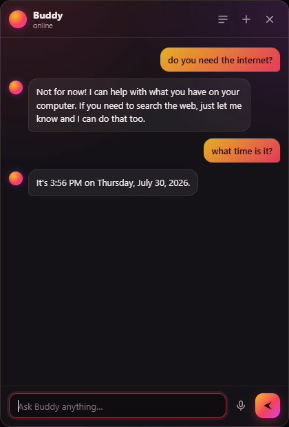

An AI that lives on your desktop, not on someone's server.
A small orb that sits above your other windows. Say “Hey Buddy” and it listens straight away; talk over its answer and it stops. No API key, no account, no sign-in — it brings its own model, its own voice and its own ears, and keeps working with the network unplugged.
Download macOS, Windows and Linux. Free, MIT licensed.
- Thinks with
- Qwen 3
- Speaks with
- Kokoro, 28 voices
- Listens with
- Whisper
- Sends home
- nothing

What it does
Answers without asking anyone
A model runs inside the app through llama.cpp. Thirteen are a click away, from 0.6 GB up, and the list says which ones your machine can actually hold. An Ollama you already run appears beside them.
Speaks, and stops when you do
Kokoro generates the speech on your own CPU, in one of 28 voices — not the robotic one your operating system ships with. Start talking over it and it stops to listen, the way a person would.
Answers to its name
Whisper listens for “Hey Buddy” on-device and replies at the orb — no window opens over your work. There is no greeting to sit through; it starts listening the moment it hears you.
Does things, if you let it
Open a page, run a search, write to a file. Off until you switch it on, files are limited to folders you pick by hand, and every action is written into the chat as it happens.
Where each part runs
| Job | Default | If you go looking |
|---|---|---|
| Thinking | Qwen 3, in the app | 12 other models, Ollama, any API key |
| Speaking | Kokoro, in the app | your OS's voices, a cloud voice |
| Listening | Whisper, in the app | your own Whisper server, a cloud service, off |
| Your files | no access at all | folders you pick, and nowhere else |
| Your chats | your disk | never uploaded |
Buddy has three jobs, and out of the box all three happen on your computer. You can move any of them to a cloud provider — paste a key from Anthropic, OpenAI, Groq and the rest, and Buddy works out whose it is. Nothing asks you to.
The exception is the first launch, which downloads the model, the voice and the ears — about three gigabytes in total, once. After that you can unplug the network and Buddy carries on. Please do check. No telemetry, no account.
Point a job at a cloud provider and that job stops being private: those messages go to them to be processed. What stays true either way is that there is no Buddy server and no proxy — nothing of yours passes through us, because there is no “us” in the path. Your key is stored on your machine and sent only to the provider it belongs to. Setting listening to off means the microphone is never opened at all.
Download
Free and MIT licensed.
-
macOS
-
Windows
-
Linux
All releases and notes on GitHub. Nothing here is code-signed, so
the first launch needs a nudge: on macOS right-click the app and choose Open; on Windows
click More info then Run anyway; on Linux chmod +x the AppImage.